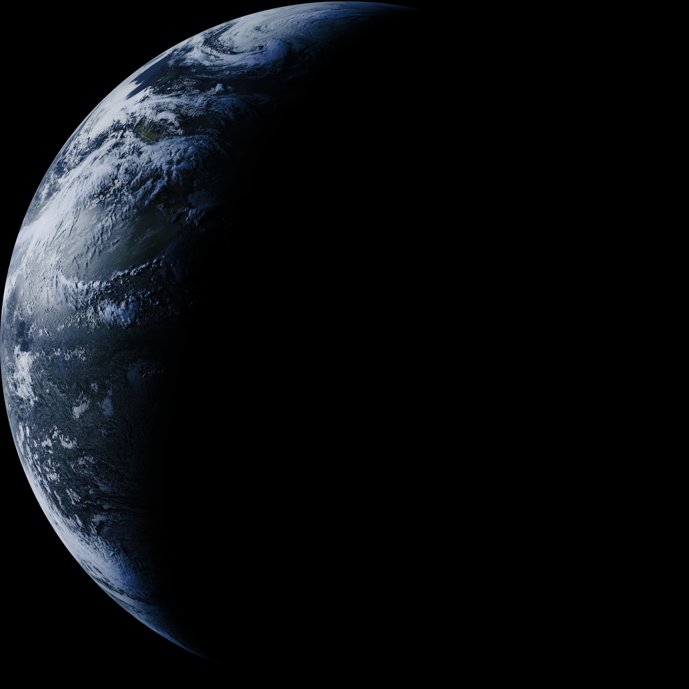

GOESpie Live
GOES-19 Full Disk Earth Imagery
Live — updates every hour
Satellite
GOES-19
Last updated
Loading...
Frequency
1694.1 MHz
Ground station
Richmond, VA

Image type
Full disk — Visible
Received by
GOESpie — Richmond, VA